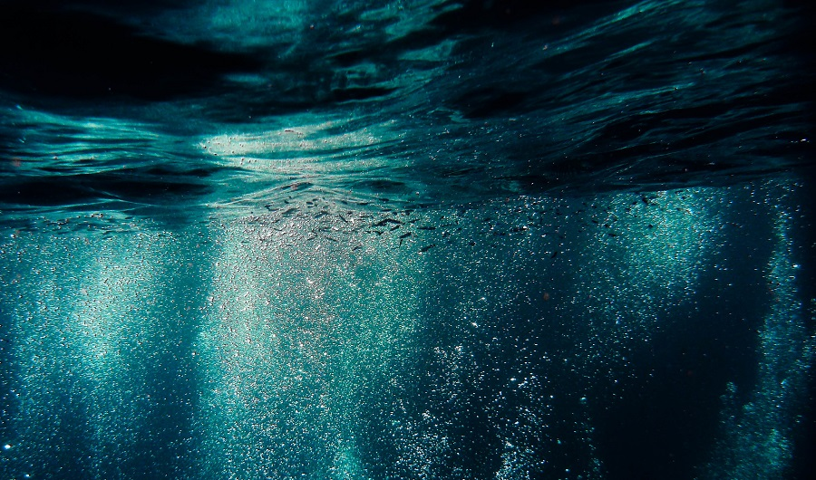

(Inside Science) -- For the first time, an intact world may have been discovered around a white dwarf, suggesting that even after typical stars die, they may still host planets, a new study finds. White dwarfs are the cooling Earth-size cores of dead stars left behind after average-size stars have exhausted their fuel and shed their outer layers. Our sun will eventually fade into a white dwarf after first bloating to become a red giant. The same fate awaits more than 90% of the stars in our galaxy.
In the new study, astronomers investigated a white dwarf in the constellation Draco about 81.5 light-years from Earth. Using NASA's Transiting Exoplanet Survey Satellite (TESS)
Climate scientists propose new explanation for the rapid changes to the ocean carbon sink in the 1990s.
The human experience is driven not just by the natural processes that shape our minds, bodies and world, but also by our ability to understand and shape those processes. From good health to terrible disease, from the foods we eat to the drugs we take, and from simple psychology to the the complexity of consciousness.
(Inside Science) -- Florida scientists have found toxic human-made pollutants in the blubber of stranded whales and dolphins, adding to a library of data that measures how human activity contaminates ocean wildlife. The researchers did not link the pollutants to the strandings -- they weren’t looking for that -- but documented the toxic chemicals in higher amounts and in more species than had been found before. The scientists can use the data to find where humans are dumping toxins into the water supply to see if the effects can be mitigated, they said.
They found, for instance, atrazine, an herbicide; DEP, a chemical found in plastics; NPE, a chemical used in food packaging; and antibacterial and antifungal agents. Earlier studies have found flame-retardant chemicals, persistent organic pollutants (POPs), PCBs and even DDT.
About 500 dolphins and whales beach themselves around the world each year. No one knows why, although theories abound. “Sometimes it’s easy to tell -- for example, if they have had a human interaction, things like entanglements or swallowing a plastic bag,” said Annie Page-Karjian, a veterinarian and assistant research professor at Florida Atlantic University’s Harbor Branch Oceanographic Institute and lead scientist of the study. Some are dead of gunshots. Most of the animals used in research are dead when found; some are euthanized. For the study, Page-Karjian and her colleagues performed necropsies on 83 dolphins and whales that were stranded on the beaches of Florida and North Carolina between 2012 and 2018. The animals were mostly bottlenose dolphins, although 10 other species were also represented. The researchers tested for 17 substances and found several that had not been reported in dolphins before.